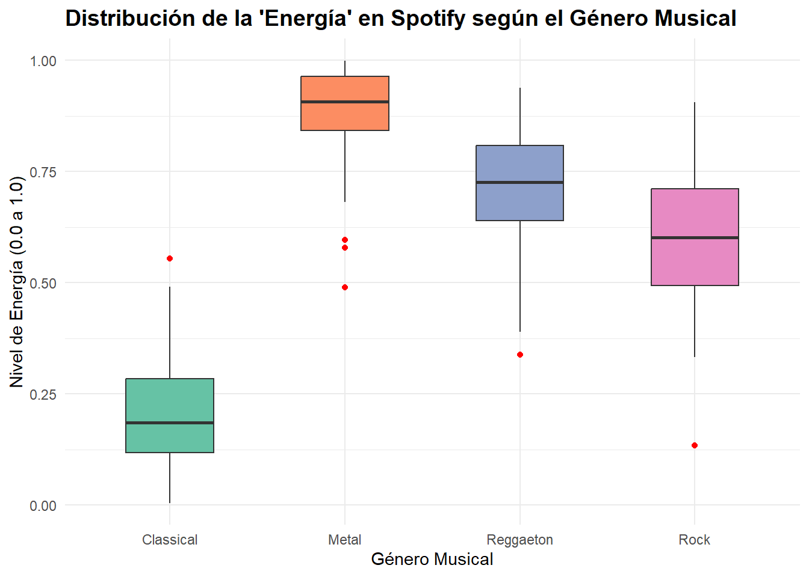
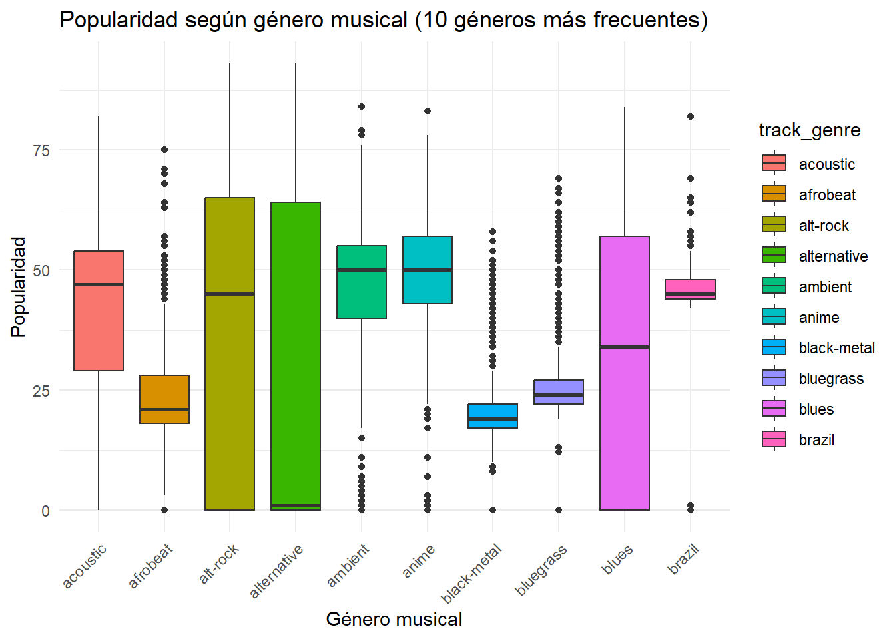
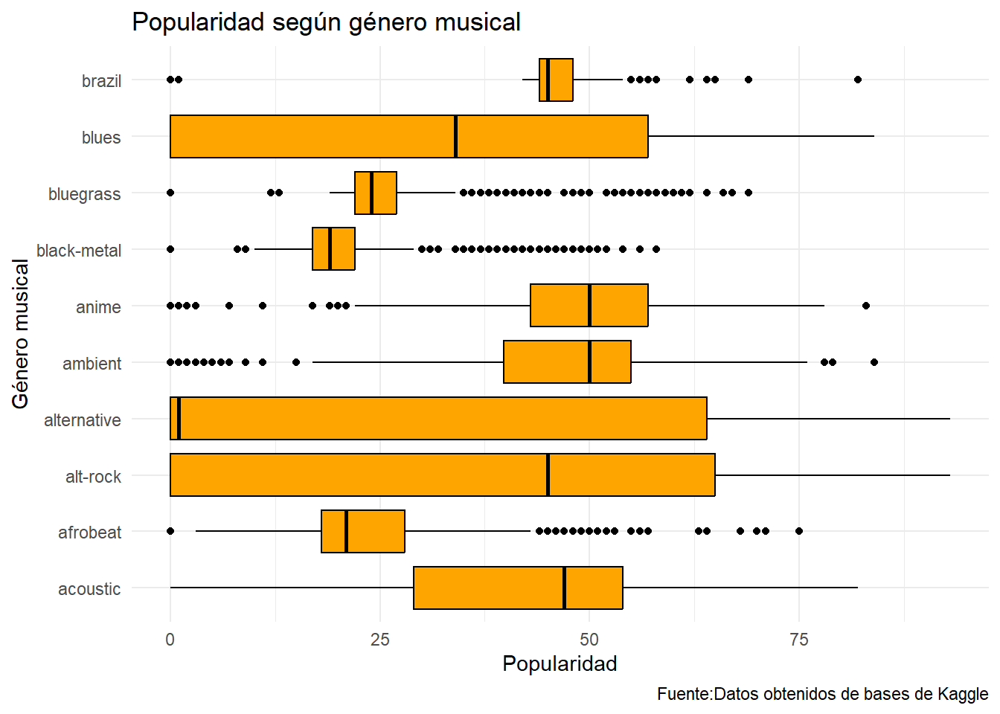

set.seed(42)
n <- 100
df <- data.frame(
track_genre = rep(c("Classical", "Reggaeton", "Rock", "Metal"), each = n),
energy = c(
rbeta(n, 2, 8), # Classical: Energía baja
rbeta(n, 7, 3), # Reggaeton: Energía alta y constante
rbeta(n, 6, 4), # Rock: Energía moderada-alta
rbeta(n, 9, 1) # Metal: Energía extremadamente alta
)
)Untitled
1. Simulación rápida de los datos de Spotify (Estructura idéntica al dataset real)
==============================================================================
OPCIÓN B: Usando ggplot2 (Da un acabado mucho más profesional)
==============================================================================
Si no tienes instalado ggplot2, descomenta la siguiente línea:
install.packages(“ggplot2”)
library(ggplot2)
ggplot(df, aes(x = track_genre, y = energy, fill = track_genre)) +
geom_boxplot(width = 0.5, outlier.color = "red", outlier.shape = 16) +
scale_fill_brewer(palette = "Set2") + # Paleta de colores atractiva
labs(title = "Distribución de la 'Energía' en Spotify según el Género Musical",
x = "Género Musical",
y = "Nivel de Energía (0.0 a 1.0)") +
theme_minimal() +
theme(legend.position = "none", # Quita la leyenda porque ya se lee abajo
plot.title = element_text(face = "bold", size = 14)) 
Base de datos de kaggle
library(readr)
dataset <- read_csv(
"C:/Users/USUARIO/Desktop/copia de seguridad/trabajo/trabajo/EXACTAS/Inferencia Est Exactas/IE 2026/Trabajos Prácticos/TP-IE-FCEyN/base para crear ejercicios/dataset.csv"
)New names:
Rows: 114000 Columns: 21
── Column specification
──────────────────────────────────────────────────────── Delimiter: "," chr
(5): track_id, artists, album_name, track_name, track_genre dbl (15): ...1,
popularity, duration_ms, danceability, energy, key, loudness... lgl (1):
explicit
ℹ Use `spec()` to retrieve the full column specification for this data. ℹ
Specify the column types or set `show_col_types = FALSE` to quiet this message.
• `` -> `...1`summary(dataset) ...1 track_id artists album_name
Min. : 0 Length:114000 Length:114000 Length:114000
1st Qu.: 28500 Class :character Class :character Class :character
Median : 57000 Mode :character Mode :character Mode :character
Mean : 57000
3rd Qu.: 85499
Max. :113999
track_name popularity duration_ms explicit
Length:114000 Min. : 0.00 Min. : 0 Mode :logical
Class :character 1st Qu.: 17.00 1st Qu.: 174066 FALSE:104253
Mode :character Median : 35.00 Median : 212906 TRUE :9747
Mean : 33.24 Mean : 228029
3rd Qu.: 50.00 3rd Qu.: 261506
Max. :100.00 Max. :5237295
danceability energy key loudness
Min. :0.0000 Min. :0.0000 Min. : 0.000 Min. :-49.531
1st Qu.:0.4560 1st Qu.:0.4720 1st Qu.: 2.000 1st Qu.:-10.013
Median :0.5800 Median :0.6850 Median : 5.000 Median : -7.004
Mean :0.5668 Mean :0.6414 Mean : 5.309 Mean : -8.259
3rd Qu.:0.6950 3rd Qu.:0.8540 3rd Qu.: 8.000 3rd Qu.: -5.003
Max. :0.9850 Max. :1.0000 Max. :11.000 Max. : 4.532
mode speechiness acousticness instrumentalness
Min. :0.0000 Min. :0.00000 Min. :0.0000 Min. :0.00e+00
1st Qu.:0.0000 1st Qu.:0.03590 1st Qu.:0.0169 1st Qu.:0.00e+00
Median :1.0000 Median :0.04890 Median :0.1690 Median :4.16e-05
Mean :0.6376 Mean :0.08465 Mean :0.3149 Mean :1.56e-01
3rd Qu.:1.0000 3rd Qu.:0.08450 3rd Qu.:0.5980 3rd Qu.:4.90e-02
Max. :1.0000 Max. :0.96500 Max. :0.9960 Max. :1.00e+00
liveness valence tempo time_signature
Min. :0.0000 Min. :0.0000 Min. : 0.00 Min. :0.000
1st Qu.:0.0980 1st Qu.:0.2600 1st Qu.: 99.22 1st Qu.:4.000
Median :0.1320 Median :0.4640 Median :122.02 Median :4.000
Mean :0.2136 Mean :0.4741 Mean :122.15 Mean :3.904
3rd Qu.:0.2730 3rd Qu.:0.6830 3rd Qu.:140.07 3rd Qu.:4.000
Max. :1.0000 Max. :0.9950 Max. :243.37 Max. :5.000
track_genre
Length:114000
Class :character
Mode :character
table(dataset$track_genre)
acoustic afrobeat alt-rock alternative
1000 1000 1000 1000
ambient anime black-metal bluegrass
1000 1000 1000 1000
blues brazil breakbeat british
1000 1000 1000 1000
cantopop chicago-house children chill
1000 1000 1000 1000
classical club comedy country
1000 1000 1000 1000
dance dancehall death-metal deep-house
1000 1000 1000 1000
detroit-techno disco disney drum-and-bass
1000 1000 1000 1000
dub dubstep edm electro
1000 1000 1000 1000
electronic emo folk forro
1000 1000 1000 1000
french funk garage german
1000 1000 1000 1000
gospel goth grindcore groove
1000 1000 1000 1000
grunge guitar happy hard-rock
1000 1000 1000 1000
hardcore hardstyle heavy-metal hip-hop
1000 1000 1000 1000
honky-tonk house idm indian
1000 1000 1000 1000
indie indie-pop industrial iranian
1000 1000 1000 1000
j-dance j-idol j-pop j-rock
1000 1000 1000 1000
jazz k-pop kids latin
1000 1000 1000 1000
latino malay mandopop metal
1000 1000 1000 1000
metalcore minimal-techno mpb new-age
1000 1000 1000 1000
opera pagode party piano
1000 1000 1000 1000
pop pop-film power-pop progressive-house
1000 1000 1000 1000
psych-rock punk punk-rock r-n-b
1000 1000 1000 1000
reggae reggaeton rock rock-n-roll
1000 1000 1000 1000
rockabilly romance sad salsa
1000 1000 1000 1000
samba sertanejo show-tunes singer-songwriter
1000 1000 1000 1000
ska sleep songwriter soul
1000 1000 1000 1000
spanish study swedish synth-pop
1000 1000 1000 1000
tango techno trance trip-hop
1000 1000 1000 1000
turkish world-music
1000 1000 library(tidyverse)── Attaching core tidyverse packages ──────────────────────── tidyverse 2.0.0 ──
✔ dplyr 1.1.4 ✔ stringr 1.5.1
✔ forcats 1.0.0 ✔ tibble 3.2.1
✔ lubridate 1.9.4 ✔ tidyr 1.3.1
✔ purrr 1.1.0
── Conflicts ────────────────────────────────────────── tidyverse_conflicts() ──
✖ dplyr::filter() masks stats::filter()
✖ dplyr::lag() masks stats::lag()
ℹ Use the conflicted package (<http://conflicted.r-lib.org/>) to force all conflicts to become errorslibrary(dplyr)
top_generos <- dataset %>%
count(track_genre, sort = TRUE) %>%
slice_head(n = 10) %>%
pull(track_genre)
dataset_top <- dataset %>%
filter(track_genre %in% top_generos)
ggplot(dataset_top, aes(x = track_genre, y = popularity, fill=track_genre)) +
geom_boxplot() +
labs(
title = "Popularidad según género musical (10 géneros más frecuentes)",
x = "Género musical",
y = "Popularidad"
) +
theme_minimal() +
theme(legend.location = "none",
axis.text.x = element_text(angle = 45, hjust = 1)
)
g_popularidad<-ggplot(dataset_top, aes(x = track_genre, y = popularity)) +
geom_boxplot(
fill = "orange",
color = "black"
) +
coord_flip() +
labs(
title = "Popularidad según género musical",
x = "Género musical",
y = "Popularidad",
caption ="Fuente:Datos obtenidos de bases de Kaggle"
) +
theme_minimal()
g_popularidad
ggsave("../imagenes/musica_popular.png",plot=g_popularidad, bg="white")Saving 7 x 5 in image